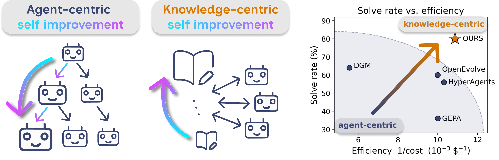
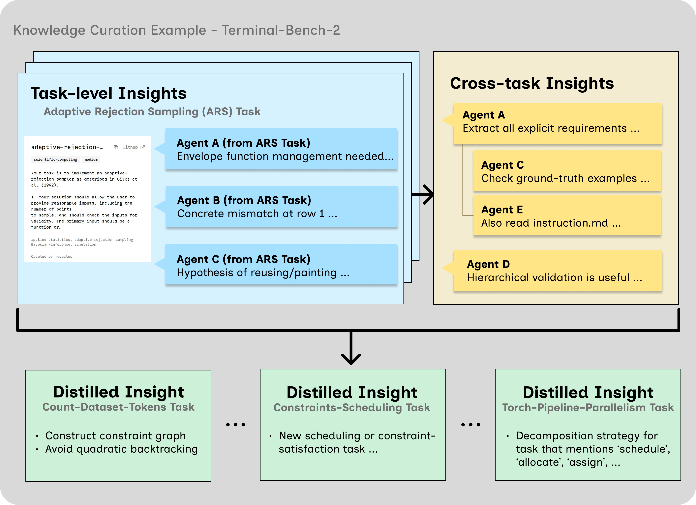

Affiliations withheld during double-blind review

Self-improving AI systems usually improve the agent itself, through prompt and workflow optimization, harness search, or self-modification. This agent-centric improvement can be expensive to maintain and hard to transfer: improvements become tied to a particular agent design, task distribution, or adaptation run. We study a complementary paradigm, knowledge-centric self-improvement, where agents remain disposable and the curated knowledge base improves over time.
We operationalize this idea via a simple protocol. Agents make attempts on one task, then contribute evidence-grounded insights to a shared knowledge base via task-level and cross-task forums, followed by distillation. Because the central locus of improvement is the knowledge itself rather than the agent, improvement becomes inspectable, transferable, and portable.
Across coding, terminal, and abstract reasoning benchmarks, our system achieves stronger performance with substantially better cost efficiency than agent-centric baselines. The curated knowledge bundle contains genuine insights that transfer to unseen tasks and across model families. These results suggest a promising shift in self-improving agentic systems: progress can be driven not only by specializing individual agents, but also by the curated persistent knowledge they leave behind.
Curated knowledge compounds over ten generations — 21% → 47.2% on Terminal-Bench 2.
See the full generation-by-generation results →Each agent is a fresh solver: it reads a seed bundle from the shared knowledge base, attempts a single task with standard tools, and writes evidence back. The agent has no private memory or specialization. The only object that improves across generations is the knowledge base, curated through a three-stage protocol.
The knowledge curation protocol shown as a loop of five beats. Seed: a generic, stateless agent receives a distilled bundle (task-level plus cross-task guidance) from the shared knowledge base. Attempt: it tries one task with standard tools; here the tests pass with exit code 0 but the result is empty. Task-level forum: agents that worked the same task post task-scoped evidence in a thread. Cross-task forum: agents discuss which observations transfer across the generation's tasks, grounding each claim in a concrete primitive and replying with agree, disagree, or synthesize. Distillation: surviving claims are consolidated into typed bundles and written back to the base. The shared knowledge base sits at the center and improves each generation; the solve rate climbs from 19 of 89 (21%) to 42 of 89 (47.2%) over ten generations while the agents stay fixed. Use the beat tabs to jump to any step; play, pause, or change speed.
For each task, agents convert raw traces into structured local evidence: which hypotheses they explored, which checks were informative, and which lines of reasoning misled them. The record stays scoped to the task it came from.
Agents discuss across tasks in the current generation. Every cross-task claim must be grounded in a concrete primitive (an operation, error, invariant, or test-runner behavior). Later rounds explicitly agree, disagree, or synthesize.
Surviving evidence is consolidated into typed bundles — transferable insights, confirmed constraints, rejected hypotheses, pitfalls, checks, next steps. The next generation receives a per-task bundle plus the shared cross-task bundle.
We compare against agent-centric self-improvement baselines (DGM, HyperAgents) and strong agentic systems on Terminal-Bench 2, all at the Haiku 4.5 backbone where available.
| Method | ARC-AGI-1 | ARC-AGI-2 | Polyglot | SWE-bench Pro | ||||
|---|---|---|---|---|---|---|---|---|
| Solve ↑ | Cost ↓ | Solve ↑ | Cost ↓ | Solve ↑ | Cost ↓ | Solve ↑ | Cost ↓ | |
| Ours (Haiku 4.5) | 82% | $46 | 76% | $65 | 80% | $92 | 84% | $76 |
| HyperAgents (Haiku 4.5) | 70% | $150 | 60% | $120 | 56% | $97 | 42% | $276 |
| DGM (Haiku 4.5) | — | — | — | — | 64% | $180 | 66% | $456 |
Performance across abstract reasoning and coding benchmarks over 10 generations. DGM only targets coding, so ARC entries are omitted. All baselines are rerun under our evaluation protocol.
| Method | Terminal-Bench 2 |
|---|---|
| OpenHands | 13.9% |
| Terminus 2 | 28.3% |
| Mini-SWE-Agent | 29.8% |
| Terminus-KIRA | 33.7% |
| Goose | 35.5% |
| Meta-Harness (Opus 4.7 + Haiku 4.5) | 37.6% |
| Ours (Haiku 4.5) | 47.2% |
Terminal-Bench 2 leaderboard scores where available, otherwise from the corresponding papers. Our simple agents win without changing the agent or scaffold — only the shared knowledge improves.
| Backbone | Polyglot | SWE-bench Pro | ARC-AGI-1 | ARC-AGI-2 | ||||
|---|---|---|---|---|---|---|---|---|
| Solve ↑ | Cost ↓ | Solve ↑ | Cost ↓ | Solve ↑ | Cost ↓ | Solve ↑ | Cost ↓ | |
| Haiku 4.5 | 80% | $92 | 84% | $76 | 82% | $46 | 76% | $65 |
| GPT-5.4-mini | 74% | $55 | 82% | $82 | 86% | $18 | 84% | $20 |
The same procedure remains effective when the backbone changes; the best backbone depends on the task family.
| Method | ARC-AGI-1 | Polyglot |
|---|---|---|
| GEPA | 44% | 36% |
| OpenEvolve | 54% | 60% |
| Ours | 82% | 80% |
Matched-budget comparison ($50 for ARC-AGI-1, $100 for Polyglot). Prompt optimizers refine a reusable policy prompt; we refine a reusable knowledge artifact.
We freeze a generation-10 knowledge bundle and apply it zero-shot to disjoint evaluation tasks — with no new forum, no recipient-side distillation. Rows are receivers; columns are donors. Darker = higher solve rate.
| Receiver \ Donor | None | GPT | Haiku |
|---|---|---|---|
| GPT-5.4-mini | 32% | 42% | 38% |
| Haiku 4.5 | 18% | 24% | 20% |
Both transfer conditions strictly extend the no-knowledge baseline's solved set, with gains under both GPT and Haiku donors — evidence the bundle carries donor-agnostic structure, not donor-specific habits.
An end-to-end trace of the protocol turning raw attempts into a reusable bundle, on a real terminal task.
Later iterations reuse distilled insights about environment assumptions, missing artifacts, and incorrect workflows rather than repeatedly rediscovering the same bottlenecks — the source of the gains over Meta-Harness, Goose, and Terminus-KIRA.

The complete run: click any generation to see the insight it distilled and the tasks it solved. Switch benchmark and choose Summary (curated picks) or Full (every task and grid).
Correspondence details to be added.